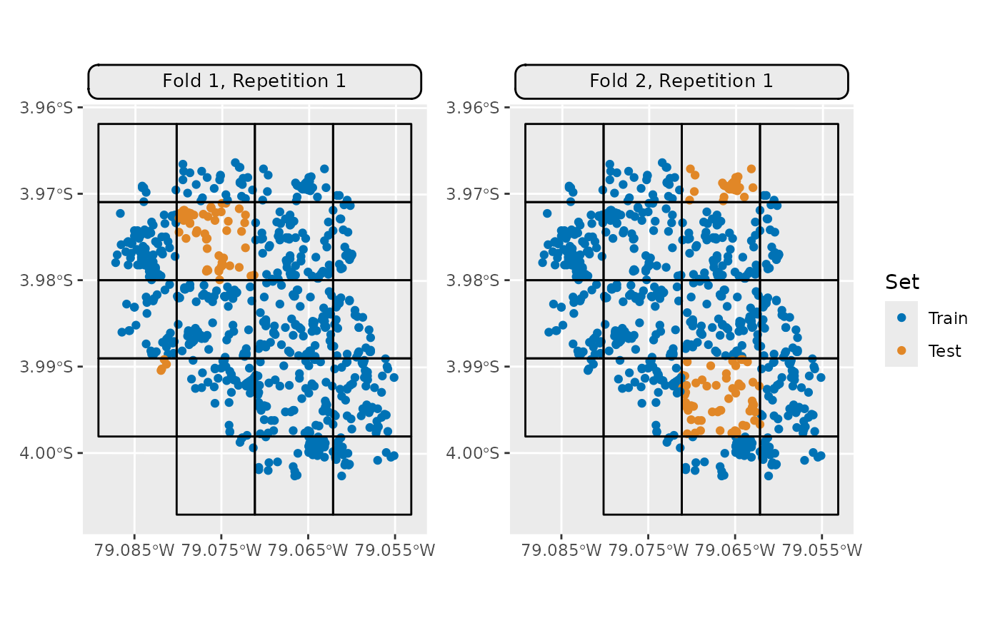

Visualization Functions for SpCV Block Methods.
Source:R/autoplot.R
autoplot.ResamplingSpCVBlock.RdGeneric S3 plot() and autoplot() (ggplot2) methods to
visualize mlr3 spatiotemporal resampling objects.
Usage
# S3 method for ResamplingSpCVBlock
autoplot(
object,
task,
fold_id = NULL,
plot_as_grid = TRUE,
train_color = "#0072B5",
test_color = "#E18727",
show_blocks = FALSE,
show_labels = FALSE,
sample_fold_n = NULL,
...
)
# S3 method for ResamplingRepeatedSpCVBlock
autoplot(
object,
task,
fold_id = NULL,
repeats_id = 1,
plot_as_grid = TRUE,
train_color = "#0072B5",
test_color = "#E18727",
show_blocks = FALSE,
show_labels = FALSE,
sample_fold_n = NULL,
...
)
# S3 method for ResamplingSpCVBlock
plot(x, ...)
# S3 method for ResamplingRepeatedSpCVBlock
plot(x, ...)Arguments
- object
[Resampling]
mlr3 spatial resampling object of class ResamplingSpCVBlock or ResamplingRepeatedSpCVBlock.- task
[TaskClassifST]/[TaskRegrST]
mlr3 task object.- fold_id
[numeric]
Fold IDs to plot.- plot_as_grid
[logical(1)]
Should a gridded plot using via patchwork be created? IfFALSEa list with of ggplot2 objects is returned. Only applies if a numeric vector is passed to argumentfold_id.- train_color
[character(1)]
The color to use for the training set observations.- test_color
[character(1)]
The color to use for the test set observations.- show_blocks
[logical(1)]
Whether to show an overlay of the spatial blocks polygons.- show_labels
[logical(1)]
Whether to show an overlay of the spatial block IDs.- sample_fold_n
[integer]
Number of points in a random sample stratified over partitions. This argument aims to keep file sizes of resulting plots reasonable and reduce overplotting in dense datasets.- ...
Passed to
geom_sf(). Helpful for adjusting point sizes and shapes.- repeats_id
[numeric]
Repetition ID to plot.- x
[Resampling]
mlr3 spatial resampling object. One of class ResamplingSpCVBuffer, ResamplingSpCVBlock, ResamplingSpCVCoords, ResamplingSpCVEnv.
Details
By default a plot is returned; if fold_id is set, a gridded plot is
created. If plot_as_grid = FALSE, a list of plot objects is returned.
This can be used to align the plots individually.
When no single fold is selected, the ggsci::scale_color_ucscgb() palette
is used to display all partitions.
If you want to change the colors, call <plot> + <color-palette>().
Examples
if (mlr3misc::require_namespaces(c("sf", "blockCV"), quietly = TRUE)) {
library(mlr3)
library(mlr3spatiotempcv)
task = tsk("ecuador")
resampling = rsmp("spcv_block", range = 1000L)
resampling$instantiate(task)
## list of ggplot2 resamplings
plot_list = autoplot(resampling, task,
crs = 4326,
fold_id = c(1, 2), plot_as_grid = FALSE)
## Visualize all partitions
autoplot(resampling, task) +
ggplot2::scale_x_continuous(breaks = seq(-79.085, -79.055, 0.01))
## Visualize the train/test split of a single fold
autoplot(resampling, task, fold_id = 1) +
ggplot2::scale_x_continuous(breaks = seq(-79.085, -79.055, 0.01))
## Visualize train/test splits of multiple folds
autoplot(resampling, task,
fold_id = c(1, 2),
show_blocks = TRUE) *
ggplot2::scale_x_continuous(breaks = seq(-79.085, -79.055, 0.01))
}
#> Warning: Ignoring unknown parameters: `crs`
#> Warning: Ignoring unknown parameters: `crs`
